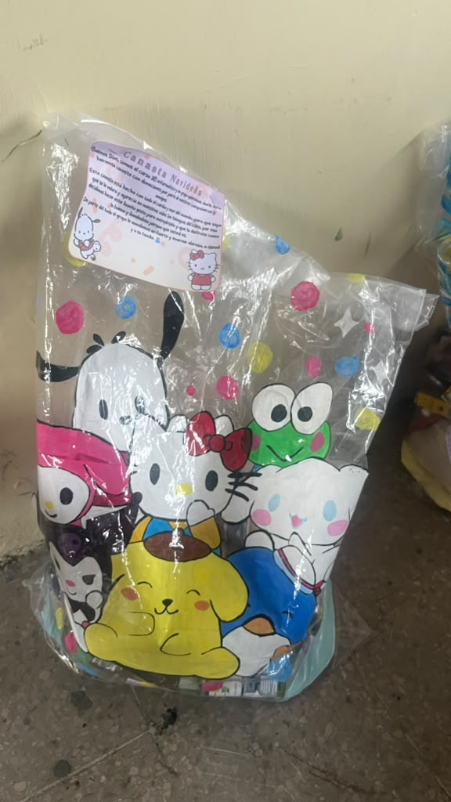
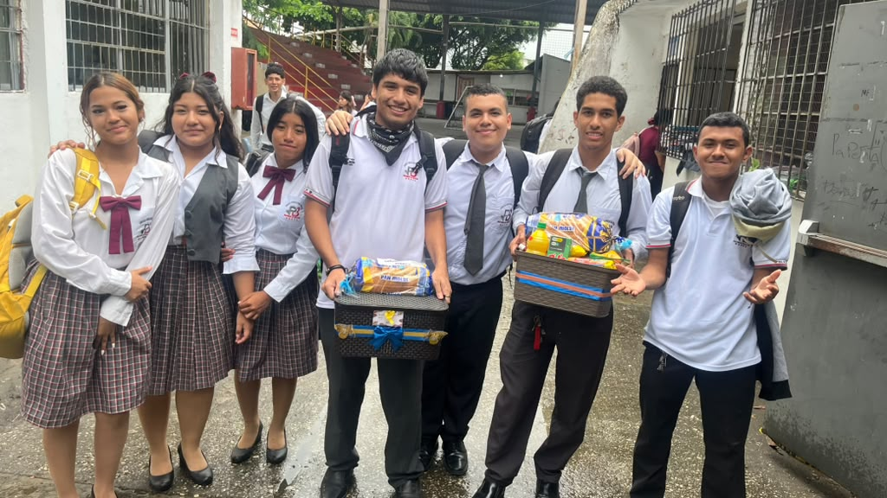

Actividad 1: Plantación de rosas
Realizamos la plantación de rosas en nuestra institución con el propósito de embellecer sus espacios y crear un ambiente más agradable. Esta actividad fomenta el cuidado del medio ambiente, la responsabilidad y el trabajo en equipo. Representa valores como el respeto por la naturaleza, el compromiso, la cooperación y el amor por nuestra institución.

Actividad 2: Armado de canastas solidarias
En esta actividad nos organizamos para preparar canastas de víveres destinadas a familias que necesitan apoyo. Fomenta la generosidad, la empatía y la colaboración entre compañeros. Representa valores como la solidaridad, la unión, la responsabilidad y el servicio a los demás, enseñándonos la importancia de compartir con quienes más lo necesitan.

Actividad 3: Preparativos para la entrega
Antes de realizar la entrega, organizamos y revisamos los últimos detalles de las canastas para asegurarnos de que todo estuviera listo. Esta actividad fomenta la planificación, la organización y el trabajo en equipo. Representa valores como la responsabilidad, el compromiso, la cooperación y la dedicación, demostrando que cada pequeño esfuerzo es importante para ayudar a los demás.

Actividad 4: Entrega de canastas solidarias
Finalmente, realizamos la entrega de las canastas de víveres a personas y familias necesitadas, compartiendo con ellas una muestra de apoyo y cariño. Esta actividad fomenta la empatía, la generosidad y el compromiso social. Representa valores como la solidaridad, la humildad, el respeto y la bondad, recordándonos que ayudar a los demás puede generar grandes cambios en nuestra comunidad.